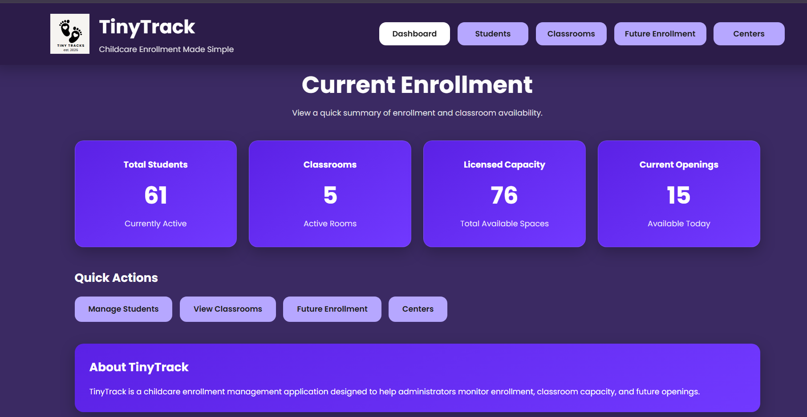
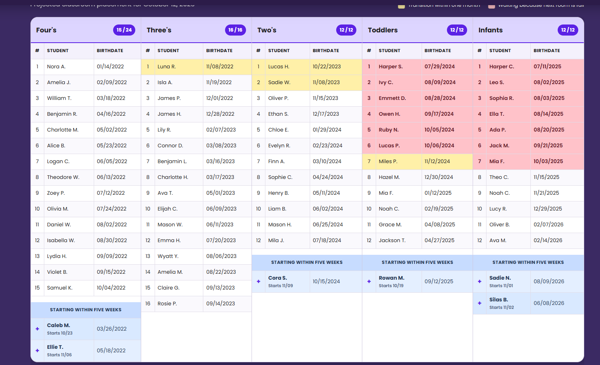

Student Management
Add, edit, search, and inactivate student records. Maintain birthdates, enrollment dates, and classroom assignments.
Childcare Enrollment Management System
TinyTrack is a web-based application that helps childcare administrators manage student enrollment, have real time knowledge of classroom openings, and future enrollment projections.
This project was inspired by my experience in childcare administration. TinyTrack is solving the problem of manually tracking this data in notebooks and spreadsheets. I am hopeful that this will be able to support administrators and make the process more efficient with less errors.
Add, edit, search, and inactivate student records. Maintain birthdates, enrollment dates, and classroom assignments.
Manage classroom age ranges, and licensed capacities. Review current enrollment and available openings.
Select a future date to calculate classroom placement using student ages, enrollment dates, departure dates, and classroom capacity.
Review projected classroom rosters, approaching transitions, capacity holds, upcoming starts, and students needing review.
These screenshots show TinyTrack using fictional sample data.


TinyTrack uses a layered architecture to separate the user interface, enrollment logic, and database operations.
Thymeleaf, HTML, and CSS display the dashboard, forms, student records, and classroom projections. Spring MVC controllers handle browser requests.
Java services manage records and calculations. The enrollment projection engine uses student ages, start dates, departure dates, and classroom capacities to calculate future placements.
Spring Data JPA repositories retrieve and save information in MySQL. The database stores centers, classrooms, and student records.
Each classroom belongs to a center, and each student record references a classroom. Foreign keys connect these records in the relational database.
TinyTrack compares a student's age-eligible classroom with their projected classroom assignment. This method identifies students held for capacity, promoted to an older classroom, or assigned normally.
private ProjectionStatus determineProjectionStatus(
Student student,
Classroom ageEligibleClassroom,
Classroom assignedClassroom) {
if (!assignedClassroom.getId().equals(
ageEligibleClassroom.getId())) {
return ProjectionStatus.HELD_FOR_CAPACITY;
}
Classroom currentClassroom = student.getClassroom();
if (currentClassroom != null
&& assignedClassroom.getMinimumAgeMonths()
> currentClassroom.getMinimumAgeMonths()) {
return ProjectionStatus.PROMOTED;
}
return ProjectionStatus.NORMAL;
}These statuses help administrators identify classroom transitions and capacity restrictions when looking ahead to future enrolllment.
TinyTrack runs locally using Java 21, Spring Boot, and MySQL. This portfolio presents the project; the application runs separately.
childcare_enrollment.src/main/resources/application.properties
with your local database connection settings.
.\mvnw.cmd spring-boot:run on Windows.
http://localhost:8080 in your browser.
Demonstration screenshots use fictional student information.
Developing TinyTrack has allowed me to connect my childcare administration experience along with my software development skills. Being able to use my knowledge to solve a real world problem that effects myself and my colleagues has been invaluable. The main challend with this project was creating classroom assignements for the future while taking into account all of the relational data.
The completed application brings student enrollment records into one area that also allows for administrations to look at the future when planning for enrollment. Future improvements could include administrator authentication, report exports, and additional automated testing.
Watch a walkthrough of TinyTrack, including its main features, enrollment management tools, and development process.